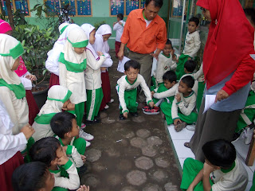

Menghidupkan nilai “Kemanusiaan yang Adil dan Beradab” di lingkungan sekolah
Sebanyak 25 siswa SDIT Raflesia Depok mengikuti kegiatan Pengabdian kepada Masyarakat yang dilaksanakan oleh delapan mahasiswa Universitas Bina Sarana Informatika pada 9 Oktober 2026.
Kegiatan ini mengajak siswa memahami bahwa Sila ke-2 Pancasila bukan sekadar hafalan, melainkan pedoman untuk memperlakukan setiap orang secara adil, menjaga martabat sesama, dan membangun kepedulian. Pesan tersebut disampaikan melalui edukasi anti-bullying dengan pendekatan yang dekat dengan keseharian anak-anak.
Di lingkungan sekolah, ejekan, julukan yang merendahkan, pengucilan, dan intimidasi dapat dianggap sebagai candaan. Melalui kegiatan ini, siswa diajak mengenali bahwa perilaku tersebut dapat menyakiti orang lain dan bertentangan dengan nilai kemanusiaan.
“Setiap teman berhak merasa aman, dihargai, dan diterima. Berbeda bukan alasan untuk mengejek.”
Belajar melalui interaksi dan permainan
Rangkaian kegiatan meliputi pembukaan, pemaparan materi Sila ke-2 Pancasila dan anti-bullying, ice breaking, permainan edukatif, kuis, tanya jawab, serta foto bersama. Metode visual dan partisipatif dipilih agar siswa dapat memahami contoh konkret dan berani menyampaikan pendapat.
